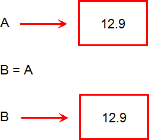

JavaScript Temelleri
Bölüm 2
Temel Bilgiler
2.14 - Verilerin Değer ve Referansla Aktarımı
Bölüm 2 Sayfa 17
Bilgisayar programcılığında, belirli değerler bir kez değişkenlere atandıktan sonra, program içinde başka değişkenlere atanabilir veya bir fonksiyonda argüman olarak kullanılabilirler. Değişkenlere atanmış olan değerlerin aktarımları sırasında ortaya gerçekleşecek olan mekanizimaların önceden bilinmesi ve aktarımların bu bilgilere göre yapılması, bilgisayar programcıları için yaşamsal önem taşır. Programcıların yaptıkları programların doğru olarak çalışabilmesi, programcının verilerin aktarım yöntemlerini iyice özümsemiş olmalarına bağlıdır. Bu konu çerçevesinde, JavaScript programlarında verilerin aktarım yöntemleri incelenecektir. Bunun için JavaScript programlama dilinde, veri türleri ve programların yürüyüşü sırasında bu veri tiplerinin davranışları tüm açıklığı ile ele alınacaktır.
2.14.1 - Değerle Aktarım
JavaScript programlama dilinde, bölüm 2.2 de, undefined, null, boolean , number, string, olmak üzere beş tane ilkel (primitif) veri tipi olduğunu görmüştük. Bunlardan sadece son üçü, kullanıcılar tarafından program girdileri olarak kullanılabilecek veri türleridir. Mantıksal ve sayısal veri ilkel veri tipleri sabit sayıda bit ile bit ile tanımlanabilecek verilerdir. Bunlar şematik olarak 8 bit uzunluğunda küçük bir veri belleği bölgesine yerleştirilebilirler. Mantıksal ve sayısal veri ilkel veri tipleri, bir değişkene atandıklarında, bu değişkene gerçek değerleri atanır. Örnek olarak,
var A = 12.9;
Bazı durumlarda, bir değişkene atanmış değerlerin, başka değişkenlere aktarılması gerekir. Örnek,
var A = 12.9; var B = A;
Eğer, aktarılan değer, sabit sayıda bit ile tanımlanabilen bir veri türü ise, verinin bir kopyası çıkarılır ve yeni bir değişken ile belirtilen yeni bir bellek bölgesine yerleştirilir. İşlem sona erdiğinde ilk değişken ve aktarılan değişken değerleri, birbiribirinden bağımsız olurlar. Bunlar iki farklı bellek bölgesine yerleştirilmiş iki farklı veri durumundadır ve birinin değerinin değişmesi diğerinin değerini değiştirmez. Bu mekanizmaya kısa olarak "Değerle Aktarım" adı verlir. Değerle aktarım mekanizmasında aktarılacak değerin bir kopyası çıkaraılarak yeni değişkene atanır ve yeni değişken başka bir bellek bölgesine yerleştirilir. Bu şekilde orijinal veri ve aktarılan veri biribirinden bağımsız olur. Değerle aktarım mekanizmasının yürüyüşü aşağıdaki gibidir:

Değerle Aktarım Mekanizması
Değerle kopyalama sınmak için, yukarıdaki şekilde görülen program akışını uygulayan bir JavaScript programı ve ilişikli olduğu, uygulama sayfasında verdiği sonuç, aşağıda görülmektedir:
... var A = 12.9, B = 0; B = A; B= 25; // Dikkat B Değişkeni Güncellendi !! sonuçYaz( 'A = ', A, 'b2.14.1-uyg-1-sonuç-1'); sonuçYaz( 'B = ', B, 'b2.14.1-uyg-1-sonuç-1'); ...
Program Sonucu :
Program sonucundan, kopyalanarak değerle aktarılan bir veri olan A değişkeni değerinin, kopyalandığı B değişkeninde değeri değişse bile orijinal veri olan A değişkenin değerinin bundan etkilenmediği görülmektedir. Bu davranış türü, değerle aktarılan tüm veri tipleri için geçerlidir.
İlkel veri tipleri arasındaki karakter dizigisi (string) veri tipi özel duruma sahiptir. Karakter dizigisi verileri, diğer ilkel veri tipleri gibi sabit veri uzunluğuna sahip değildir. Karakter dizigisi verileri istendiği kadar uzun olabilirler ve bellekte büyük bir yer kaplayabilirler. Bu durumda bu verilerin değerle kopyalanmasının çok uygun olmayacağı ve büyük karakter dizigisi tipinde ilkel değişkenlerin aşırı bir şekilde kokpyalanmasının, kullanılabilir program belleğini (stack memory) kısa süre sonra tüketebileceği düşünülebilir. JavaScript yorumlayıcısı bunun önlenmesi için kendine özgü önlemler almış olabilir. Fakat, pratikte aşağıdaki JavaScript programının ve ilişikli olduğu, uygulama sayfasında verdiği sonuçtan açıkça ilkel karakter dizigisi (string) verilerin, değerle aktarıldığı görülmektedir.
... var A = 'İyi Yıllar !', B = ''; B = A; B= = 'Yeni Yılınız Kutlu Olsun !'; // Dikkat B Değişkeni Güncellendi !! sonuçYaz('A = ', A, 'b2.14.1-uyg-2-sonuç-1'); sonuçYaz('B = ', B, 'b2.14.1-uyg-2-sonuç-2'); ...
Program Sonucu :
Yukarıdaki uygulama sonuçları, açıkça ilkel karakter dizigisi (string) verilerin değerle aktarıldığını veya en azından görünür mekanizmanın böyle olduğunu açıklamaktadır. Çünkü, aktarıldığı değişkenin değeri değişmekte olmasına karşın, orijinal değişken değeri bundan etkilenmemektedir.
JavaScript programlama dili, nesne yönelimli programlamayı destekleyen bir programlama dilidir. Nesne tipleri kullanıcılar tarafından oluşturulabileceği gibi, 2.2.6 bölümünde belirtildiği gibi, öntanımlı olarak da bulunurlar.
Öntanımlı nesneler arasında Boolean, Number, String, nesneleri özel önem taşır. Bu nesneler, ilkel veri tiplerine karşı gelirler. JavaScript programlama dilinde, verilier istenirse, ilkel veri tipinde, istenirse öntanımlı nesne tipinde tanımlanabilir. Örnek olarak, bir mantıksal veri,
a = true;
şeklinde bir ilkel mantıksal tip olarak tanımlanabilidiği gibi,
a = new Boolean( true);
şeklinde, bir öntanımlı mantıksal nesne sınıf örneği olarak da tanımlanabilir. Sayılar ve karakter dizgilerinin de aynı şekilde hem ilkel veri hem de öntanımlı nesne örnekleri olarak tanıtılmaları olanağı bulunmaktadır. Diğer öntanımlı nesne örnekleri de kendi sııflarının örnekleri olarak tanıtılırlar.
JavaScript programlama dilinde, mantıksal, sayısal ve sözel verilerin ilkel veri tipi olarak veya öntanımlı nesne sınıf örnekleri olarak tanıtılmaları programlarda kullanılmalarını etkilemez. Bu veriler, birer nesne olmalarına karşın aynı ilkel veri tipindeki karşılıkları gibi değerle aktarılırlar. Ayrıca, öntanımlı, Date, RegExp, Function ve Error nesne sınıf örnekleri de, değerle aktarılır. Bu konuda bir JavaScript programı ve bağlantılı olduğu uygulama sayfasında verdiği sonuç, aşağıda görülmektedir:
... var A = new Boolean(false), B = null, C = new Number(34), D = null, E = new String('Atatürk Mozolesi'), F = null; B = A; B = true; // Dikkat B Değişkeni Güncellendi !! sonuçYaz('A = ', A, 'b2.14.1-uyg-3-sonuç-1'); D = C; D = 180; // Dikkat D Değişkeni Güncellendi !! sonuçYaz('C = ', C, 'b2.14.1-uyg-3-sonuç-2'); F = E; F = 'Anıtkabir'; // Dikkat F Değişkeni Güncellendi !! sonuçYaz('E = ', E, 'b2.14.1-uyg-3-sonuç-3'); ...
Program Sonucu :
Yukarıdaki uygulama sonuçları, açıkça bazı öntanımlı nesne tiplerinin de değerle aktarıldığını açıklmaktadır. Çünkü, aktarıldığı değişkenin değeri değişmesine karşın, orijinal değişken değeri bundan etkilenmemektedir.
Programlarda bir değişkene atanmış değerlerin bir başka kullanım yöntemi de fonksiyonlarda argüman olarak kullanılmalarıdır. Değerle aktarılan büyüklükler, fonksiyonlarda parametre olarak kullanıldıklarında, fonksiyonda değerlerinin bir kopyası argüman olarak kullanılır. Fonkssiyon içinde, parametrenin değeri değişirse bu değişiklik yerel olarak kalır ve fonksiyon dışına yansımaz yani, orijinal değer fonksiyondaki değişikliklerden etkilenmez. Bir örnek olarak, değerle aktarılan karakter dizgisi nesne örneğinin, fonksiyonda argüman (parametre) olarak kullanılmasında, fonksiyon içinde gerçekleşen değer değişiminin, fonksiyon dışındaki orijnal değeri etkilemediği, aşağıdaki JavaScript programında uygulanmış ve bu programın iliştirildiği sayfada verdiği sonuç aşağıda görüntülenmiştir:
... function değerDeğiştir(değer) { değer = 'Güneş' } var sözelVeri = new String('Dünya'); değerDeğiştir(sözelVeri); sonuçYaz('SözelVeri = ', sözelVeri, 'b2.14.1-uyg-4-sonuç-1'); ...
Program Sonucu :
Yukarıdaki uygulama sonuçları, değerle yani kopyalanarak aktarılan veri tiplerinin, fonksiyonlarda parametre olarak kullanıldıklarında, kopyalarının parametre olarak kullanıldığını ve fonksiyon içinde kopyalarının değerleri değişirse bu değişikliklerin örijinal değeri etkilemeyeceğini göstermektedir.
Özetle, mantıksal,sayısal ve sözel ilkel veri tipleri ile, öntanımlı Boolean, Number, String, Function, Date, RegExp, Error nesne sınıfı örnekleri değerle (kopyalanarak) aktarılır, fonksiyonlarda parametre olarak kopyaları kullanılır. Tüm bu veri tipleri kopyalanarak aktarıldığından, kopyalarının değer değiştirmesi orijinal verileri etkilemez.
lkel veri tipleri değerleri ile karşılaştırılırlar. Bunların değerleri ve tipleri aynı ise, === işlemcisi ile, salt değerleri aynı fakat tipleri farklı ise, == işlemcisi ile olumlu sonuç vereceklerdir.
Örnekleri değerle aktarılanlar dahil, tüm nesne sınıf örnekleri referans ile karşılaştırılırlar. Bu konu, bölüm 2.10 de ayrıntılı olarak incelenmiştir.